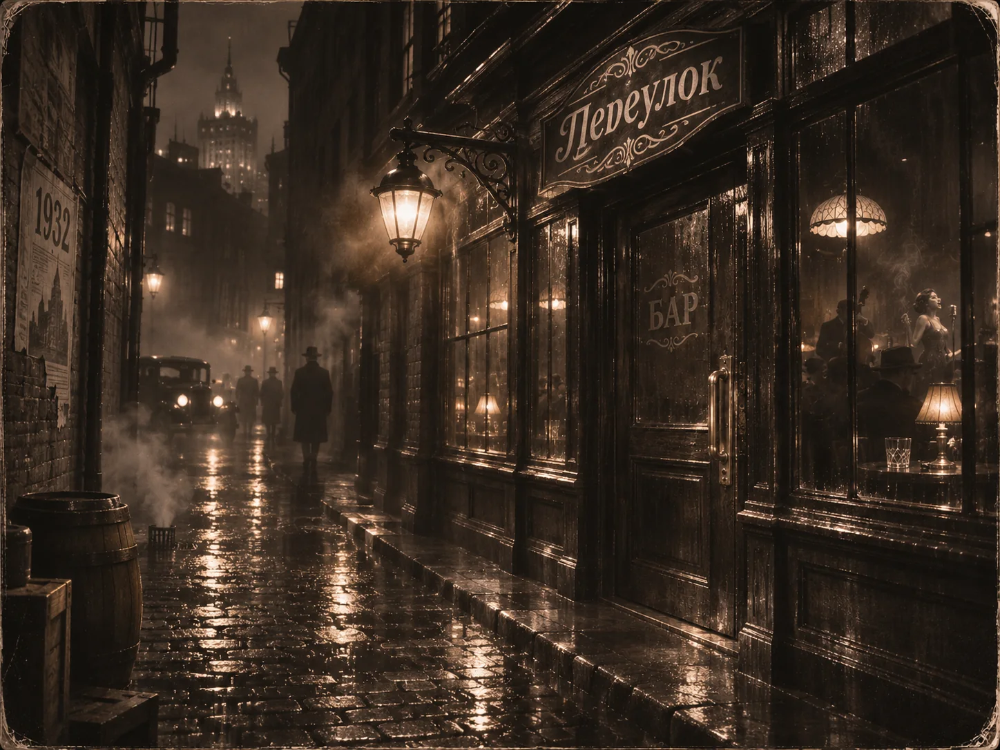

АУДИОКОМИКС
ИСТОРИИ, КОТОРЫЕ ОЖИВАЮТ
ПИЛОТНЫЙ ВЫПУСК / 01
ГАНГСТЕРСКАЯ КОМЕДИЯ · 1930-е
Переулок
.
Большие дела начинаются в маленьких переулках.
ИСТОРИЯ 01
/ ДЕМОНСТРАЦИЯ
Кино
Комикс

ПЕРЕУЛОК
1932
← Назад
Начать ▶
Вперёд →